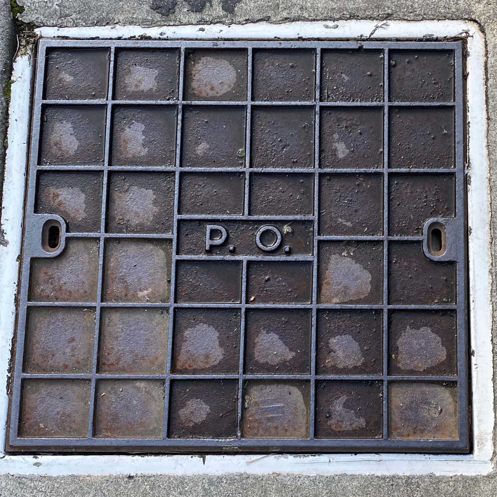
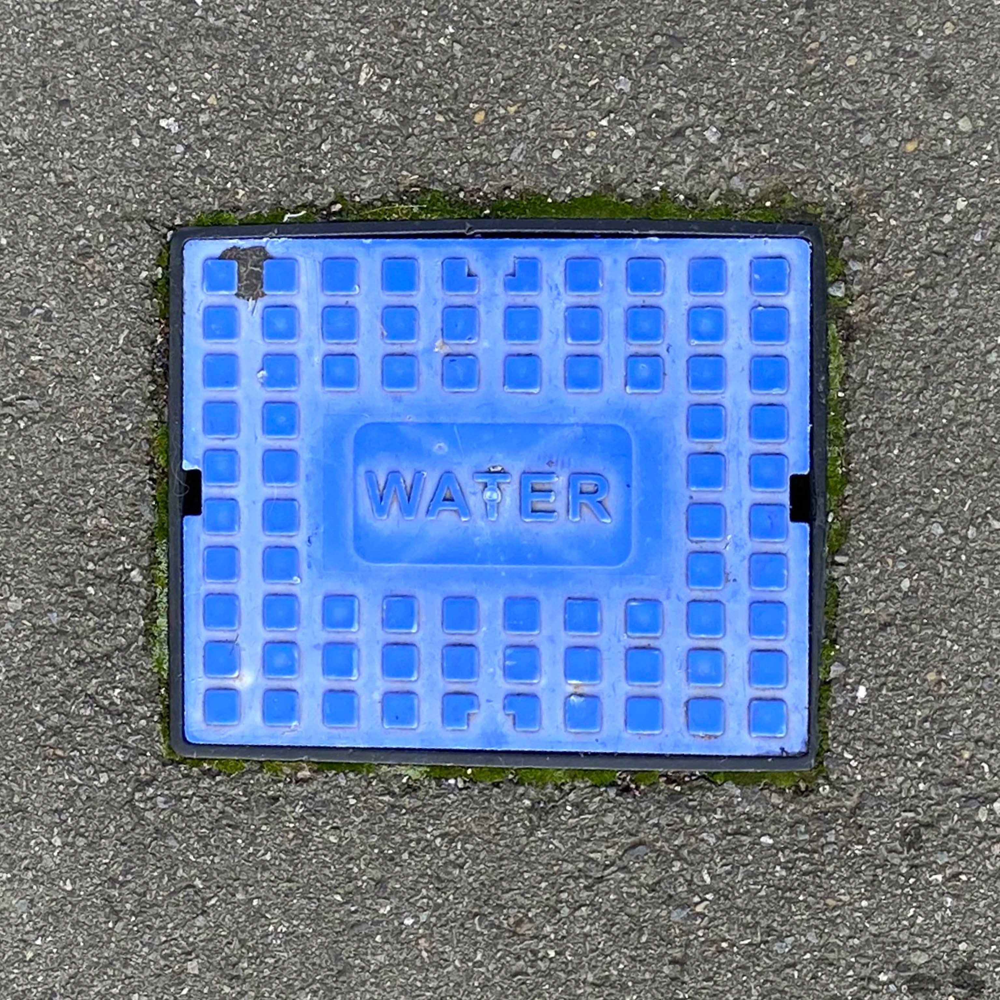

Manhole covers are the access points to uncovering what lies underneath Wellington. They are easily accessible and provide entry to the networking infrastructure that hosts, stores, and processes information. Connecting us to numerous networks around the world.



